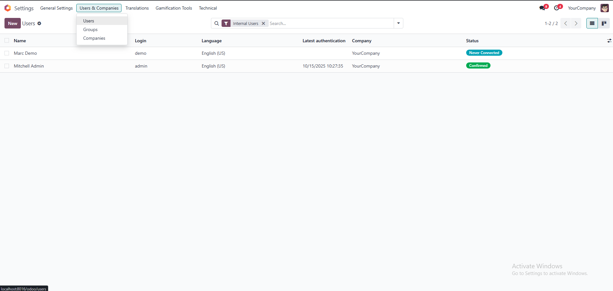
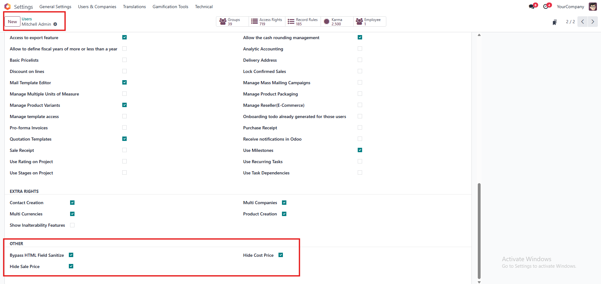
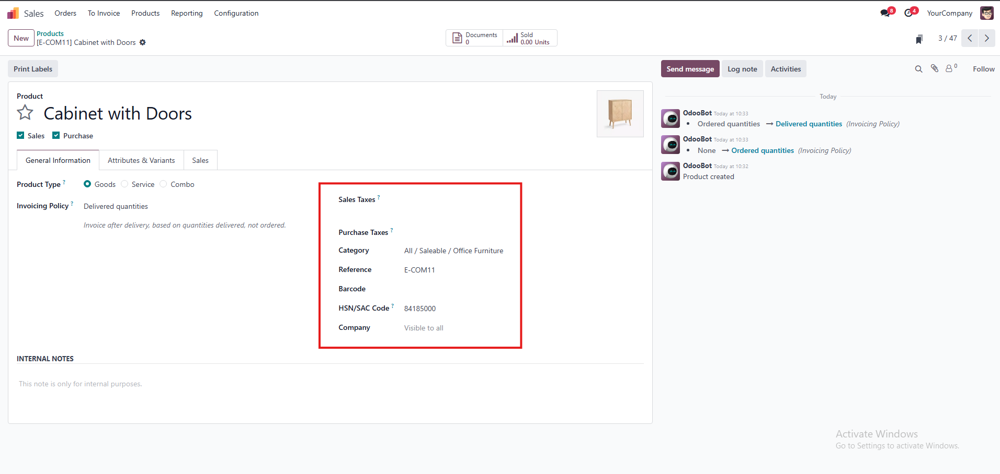
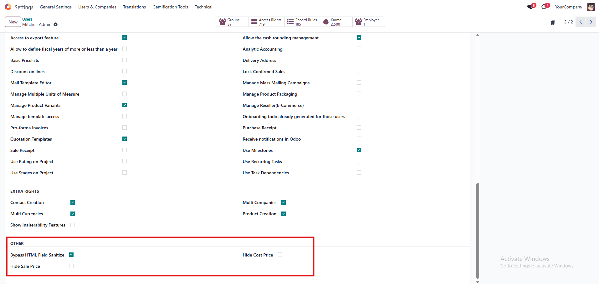
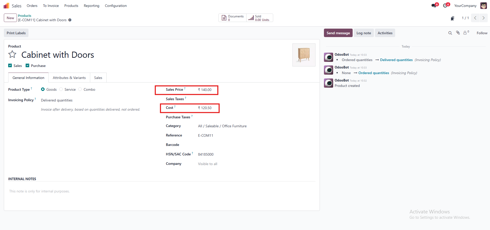

Hide product prices based on user settings
This module enhances product data security by allowing administrators to control visibility of product sale and cost prices on product forms, based on user group.
This ensures that sensitive pricing information is only visible to authorized personnel such as finance managers or product administrators,
while general sales or warehouse users can still access product records without seeing confidential price data.
Key Features
- Hide Sale Price (list_price) field from selected users.
- Hide Cost Price (standard_price) field from selected users.
- Controlled by two configurable security groups:
- Hide Sale Price
- Hide Cost Price
- Works seamlessly in both Odoo Community and Enterprise editions.
Usage Guide
- Navigate to Settings -> Users & Companies -> Users
- Select the user"Enable the Checkbox" of Hide Cost Price or Hide Sale Price accordingly
- Save your changes
- To Hide the Cost Price and Sale Price from the product
- If Checkbox is unchecked the fields will show as it is
Screenshots
- Settings Checkbox Enabled


- Fields Hide from product form

- If Checkbox is Disabled

- Default Fields are Visible as it is
